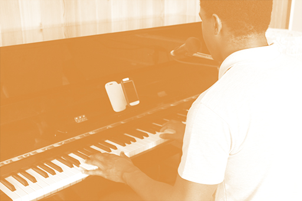
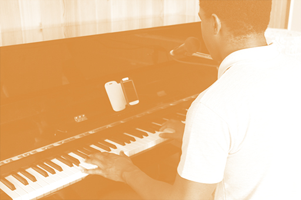

20-05-14
MANÉ
FERNANDES
O Mané começou a dar-me aulas em 2010 na Escola de Jazz do Porto onde nos encontrámos para tirarmos as fotografias. Ele estuda Guitarra Jazz na ESMAE e quando começámos a tocar todas as semanas num cubiculozinho da EJP o meu objetivo era preparar-me para o mesmo curso que ele. Para além de Instrumento estudei também Formação Musical lá.
Na altura estava dividido entre Guitarra Jazz e Design e, felizmente, acabei por seguir pelo segundo mas nunca deixo de ter aquela peninha de não viver música. Mesmo assim continuei a ter aulas com o Mané até ao ano passado, e apenas saí por causa dos conflitos com a faculdade.
Quando comecei a ter aulas com ele já tocava há alguns aninhos e gostava bastante de Jazz, mas não estava muito por dentro de toda a vasta gama incrível de músicos que existem. Então comecei a conhecê-los a pouco e pouco com o Mané, há medida que tentava acompanhar com a guitarra, ainda que com moderado sucesso.
Posso dizer que grande parte dos músicos que oiço hoje foram influência dele, não só de Jazz mas também de Soul, HipHop, e por aí a fora. Nos três anos que estudei com ele evoluí imenso com as nossas horas divertidas de estudo a tocar e ouvir música. Mesmo não tendo mais aulas com o Mané vamo-nos encontrando aqui e ali em Jams ou concertos.

 
